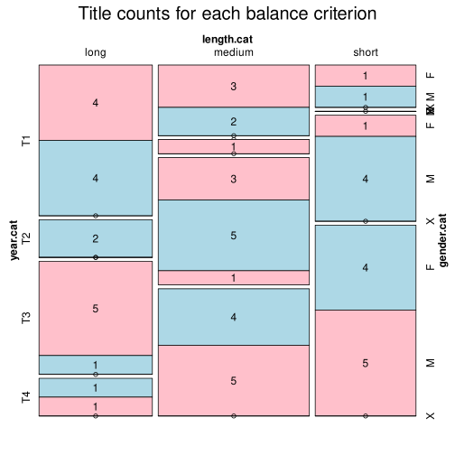

Click on a column heading to sort. Click on a text identifier to read the text (may not work in older browsers).
| Identifier | Encoding | Pages | Words | (Size) | Date (Slot) | Title | Author | Sex | Reprints |
|---|---|---|---|---|---|---|---|---|---|
| SWE11729834 |
eltec-1 | 320 | 67255 | (medium) | (T4) | Familjen Vinge | Sandel, Maria (1870-1927) | F | low |
| SWE1175632 |
eltec-1 | 243 | 53755 | (medium) | (T4) | Filippas öden | Stéenhoff, Frida (1865-1945) | F | low |
| SWE120.7.1 |
eltec-1 | 151 | 33619 | (short) | (T3) | Berta Funcke | Malling, Mathilda [Stella Kleve] (1864-1942) | F | low |
| SWE1256126 |
eltec-1 | 418 | 113331 | (long) | (T3) | Antikrists Mirakler | Lagerlöf, Selma (1858-1940) | F | low |
| SWE13553440 |
eltec-1 | 127 | 45461 | (short) | (T3) | Hemsöborna | Strindberg, August (1849-1912) | M | high |
| SWE1461421 |
eltec-1 | 367 | 85940 | (medium) | (T4) | Virveln | Sandel, Maria (1870-1927) | F | low |
| SWE14662244 |
eltec-1 | 892 | 221572 | (long) | (T2) | Psykologiska gåtor | Ljungstedt, Aurora [Claude Gerard] (1821-1908) | F | low |
| SWE1498004 |
eltec-1 | 104 | 20327 | (short) | (T3) | Sensitiva amorosa | Hansson, Ola (1860-1925) | M | high |
| SWE1524996 |
eltec-1 | 322 | 83612 | (medium) | (T4) | Herr von Hancken | Bergman, Hjalmar (1883-1931) | M | high |
| SWE1542694 |
eltec-1 | 262 | 54380 | (medium) | (T1) | Strid och frid | Bremer, Fredrika (1801-1865) | F | low |
| SWE1543052 |
eltec-1 | 598 | 155329 | (long) | (T1) | Torparen och hans omgifning | Knorring, Sophie von (1797-1848) | F | low |
| SWE1595399 |
eltec-1 | 337 | 72531 | (medium) | (T3) | Pengar | Benedictsson, Victoria [Ernst Ahlgren] (1850-1888) | F | high |
| SWE1598607 |
eltec-1 | 262 | 72090 | (medium) | (T2) | Oxygen och Aromasia | Lundin, Claës (1825-1908) | M | low |
| SWE1611687 |
eltec-1 | 239 | 41626 | (short) | (T4) | Ur en ensams dagbok | Berger, Henning (1872-1924) | M | low |
| SWE1611719 |
eltec-1 | 281 | 70053 | (medium) | (T4) | Hans nåds testamente | Bergman, Hjalmar (1883-1931) | M | high |
| SWE1619135 |
eltec-1 | 185 | 33011 | (short) | (T4) | Norrtullsligan | Wägner, Elin (1882-1949) | F | low |
| SWE1620755 |
eltec-1 | 288 | 94900 | (medium) | (T3) | I Stockholm | Agrell, Alfhild [Lovisa Petterkvist] (1849-1923) | F | low |
| SWE1621081 |
eltec-1 | 292 | 74181 | (medium) | (T3) | Modern | Benedictsson, Victoria [Ernst Ahlgren] (1850-1888) | X | low |
| SWE1623997 |
eltec-1 | 252 | 57953 | (medium) | (T3) | Alice Brandt | Malling, Mathilda [Stella Kleve] (1864-1942) | F | low |
| SWE1624464 |
eltec-1 | 242 | 57303 | (medium) | (T3) | Röde Prinsen | Lundegård, Axel (1861-1930) | M | low |
| SWE1626787 |
eltec-1 | 208 | 47370 | (short) | (T3) | Förvillelser | Söderberg, Hjalmar (1869-1941) | M | high |
| SWE1643785 |
eltec-1 | 304 | 104048 | (long) | (T3) | Hemma i Jockmock | Agrell, Alfhild [Lovisa Petterkvist] (1849-1923) | F | low |
| SWE1644675 |
eltec-1 | 816 | 262447 | (long) | (T3) | Till Klondyke! | Kerfve, Axel (1863-1938) | M | low |
| SWE1649001 |
eltec-1 | 256 | 60783 | (medium) | (T4) | David Ramms arv | Andersson, Dan (1888-1920) | M | high |
| SWE1654505 |
eltec-1 | 206 | 35579 | (short) | (T4) | Helenas första kärlek | Krusenstjerna, Agnes von (1894-1940) | F | low |
| SWE1660065 |
eltec-1 | 142 | 40991 | (short) | (T4) | Skuggan som stal hans själ | Uddgren, Gustaf (1865-1927) | M | low |
| SWE1662766 |
eltec-1 | 549 | 144342 | (long) | (T3) | John Hall | Elkan, Sophie (1853-1921) | F | low |
| SWE1722439 |
eltec-1 | 333 | 92389 | (medium) | (T1) | Amalia Hillner | Almqvist, Carl Jonas Love (1793-1866) | M | low |
| SWE1722444 |
eltec-1 | 507 | 164186 | (long) | (T1) | Tre fruar i Småland | Almqvist, Carl Jonas Love (1793-1866) | M | low |
| SWE1728740 |
eltec-1 | 260 | 47918 | (short) | (T4) | Doktor Glas | Söderberg, Hjalmar (1869-1941) | M | high |
| SWE1790113 |
eltec-1 | 417 | 111080 | (long) | (T3) | Fru Marianne | Benedictsson, Victoria [Ernst Ahlgren] (1850-1888) | F | high |
| SWE1859574 |
eltec-1 | 156 | 37729 | (short) | (T1) | Arabella | Hebbe, Wendela [Liana](1808-1899) | F | low |
| SWE1863791 |
eltec-1 | 480 | 117840 | (long) | (T1) | Professorn och hans skyddslingar | Flygare-Carlén, Emilie (1807-1892) | F | low |
| SWE1963958 |
eltec-1 | 117 | 11875 | (short) | (T3) | Ett mosaikarbete | Lybeck, Mikael (1864-1925) | M | low |
| SWE2016528 |
eltec-1 | 194 | 28472 | (short) | (T4) | Den starkare | Lybeck, Mikael (1864-1925) | M | low |
| SWE2055258 |
eltec-1 | 112 | 29259 | (short) | (T1) | Sweriges sista strid | Mellin, Gustaf Henrik (1803-1876) | M | low |
| SWE2105353 |
eltec-1 | 775 | 188240 | (long) | (T1) | Rosen på Tistelön | Flygare-Carlén, Emilie (1807-1892) | F | high |
| SWE2186124 |
eltec-1 | 400 | 170059 | (long) | (T1) | Fribytaren på Östersjön | Rydberg, Víktor (1828-1895) | M | low |
| SWE2589232 |
eltec-1 | 382 | 115867 | (long) | (T1) | Romanhjeltinnan | Flygare-Carlén, Emilie (1807-1892) | F | low |
| SWE262937 |
eltec-1 | 283 | 93191 | (medium) | (T3) | Röda rummet | Strindberg, August (1849-1912) | M | high |
| SWE31100 |
eltec-1 | 139 | 27040 | (short) | (T4) | Före giftermålet | Hansson, Ola (1860-1925) | M | low |
| SWE31200 |
eltec-1 | 324 | 73252 | (medium) | (T4) | Pennskaftet | Wägner, Elin (1882-1949) | F | high |
| SWE31501 |
eltec-1 | 292 | 73527 | (medium) | (T3) | La Mouche | Lundegård, Axel (1861-1930) | M | low |
| SWE3259766 |
eltec-1 | 255 | 98500 | (medium) | (T1) | Hin Ondes hus | Ljungstedt, Aurora [Richard](1821-1908) | F | low |
| SWE3312560 |
eltec-1 | 571 | 153299 | (long) | (T3) | Gösta Berlings saga | Lagerlöf, Selma (1858-1940) | F | high |
| SWE354083 |
eltec-1 | 422 | 72069 | (medium) | (T4) | Den allvarsamma leken | Söderberg, Hjalmar (1869-1941) | M | high |
| SWE479295 |
eltec-1 | 434 | 183569 | (long) | (T1) | Den siste athenaren | Rydberg, Víktor (1828-1895) | M | low |
| SWE499304 |
eltec-1 | 305 | 56685 | (medium) | (T3) | Endymion | Heidenstam, Verner von (1859-1940) | M | low |
| SWE501583 |
eltec-1 | 216 | 44395 | (short) | (T4) | Körkarlen | Lagerlöf, Selma (1858-1940) | F | high |
| SWE53736 |
eltec-1 | 337 | 110669 | (long) | (T4) | Arbetare | Koch, Martin (1882-1940) | M | low |
| SWE8203289 |
eltec-1 | 177 | 58826 | (medium) | (T3) | I havsbandet | Strindberg, August (1849-1912) | M | high |
| SWE8222888 |
eltec-1 | 200 | 46793 | (short) | (T4) | En rackarunge | Nordström, Ester Blenda (1891-1948) | F | low |
| SWE8223723 |
eltec-1 | 400 | 118802 | (long) | (T1) | Smaragdbruden | Almqvist, Carl Jonas Love (1793-1866) | M | low |
| SWE8395466 |
eltec-1 | 233 | 64036 | (medium) | (T1) | Fru Catharina Boije och hennes döttrar | Runeberg, Fredrika Charlotta (1807-1879) | F | low |
| SWE8395467 |
eltec-1 | 383 | 112321 | (long) | (T2) | Sigrid Liljeholm | Runeberg, Fredrika Charlotta (1807-1879) | F | low |
| SWE8410781 |
eltec-1 | 282 | 69466 | (medium) | (T1) | Fyra Giftermål | Snellman, Johan, Vilhelm (1806-1881) | M | low |
| SWE914400 |
eltec-1 | 422 | 110341 | (long) | (T4) | Åsa-Hanna | Wägner, Elin (1882-1949) | F | low |
| SWE9491746 |
eltec-1 | 300 | 74601 | (medium) | (T4) | Markurells i Wadköping | Bergman, Hjalmar (1883-1931) | M | high |